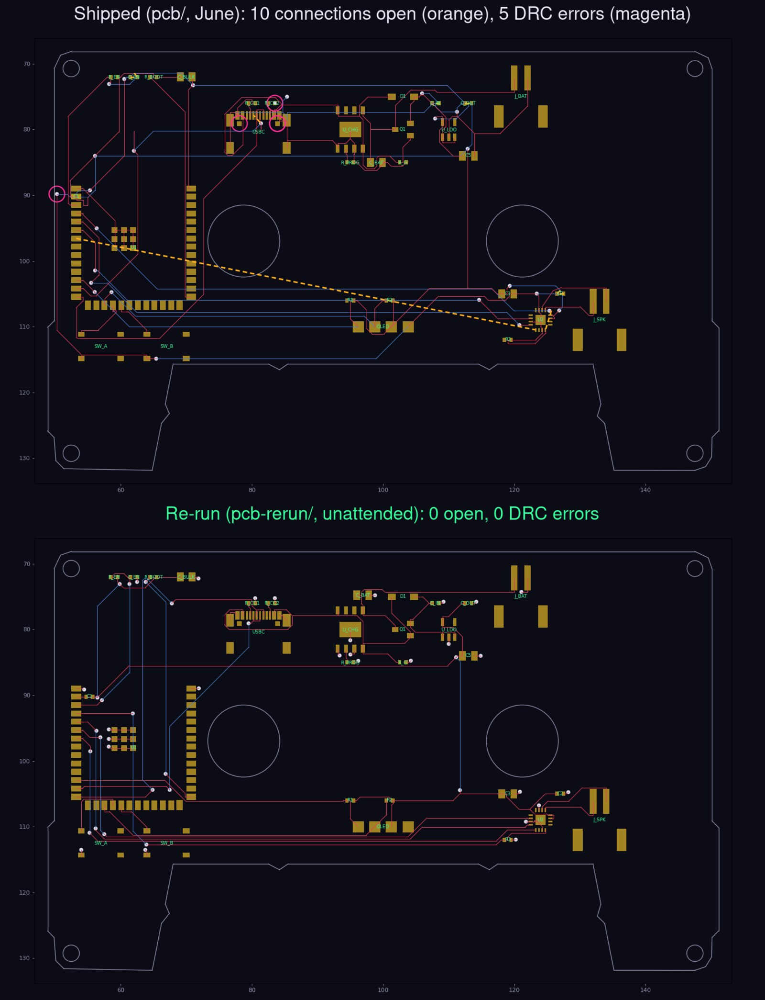

flexisette is the board that taught us most of what our PCB tooling knows, and in June it beat us anyway. It is a cassette-shaped ESP32-S3 music player: an OLED glowing through the tape window, a small class-D amp, USB-C and a LiPo, on the real outline of a compact cassette with its window, reel holes, screw holes and head notch. After three days of work we called it prototype-ready with about ten connections still open, left for hand-finishing. This week we re-ran it next to the original, as we did with einhander. Same circuit, same floorplan, nobody touching KiCad. The re-run has no open connections and no DRC errors, and the routing takes six seconds.

01 / The two boards
| Shipped (June) | Re-run | |
|---|---|---|
| Open connections | 10 | 0 |
| Shorts | 0 | 0 |
| DRC errors, JLCPCB rules | 5 | 0 |
| Pads not reached on their own layer | 4 | 0 |
| Vias | 26 | 47 |
| Track length | 1263 mm | 1000 mm |
| Ground run as track instead of pour | 350 mm | 44 mm |
Both are 2-layer boards with a ground pour on the bottom, scored the same way. The re-run's netlist is identical to the shipped board's: 22 nets, the same pads on each. It passes KiCad DRC at every severity with five silkscreen warnings, and our checks for hole spacing, via sizes and pads reached only from the wrong side. It has not been through JLCPCB's online DFM or a human review yet, so it is not an order.
02 / What went wrong in June
In June the router never saw the board we were building. The pipeline asked tscircuit for a Specctra DSN file, patched that file with scripts (keepouts for the tape window and reel holes, merged net names), routed it with Freerouting, and injected the result into KiCad through its scripting API, which needs KiCad running. That left two descriptions of the board to keep in step: the KiCad file and the DSN. Our own roadmap listed the consequence as known gap number one: move a part, and the router still routes it where it used to be.
The obvious fix is to export the DSN from KiCad itself, so the router gets exactly the board on disk. We tried that in June. KiCad's exporter returned "false" with no message, every time. A web search turned up reports of it being broken for years, so we gave up on it and built around it.
03 / The exporter was never broken
KiCad refuses to export any board that contains a footprint with an empty reference, and when run from a script it says nothing about why. tscircuit exports its bare holes and vias as footprints with no reference. flexisette has one. einhander has four, and the same export failed there last week. Give those footprints a name for the round trip and the export works first time.
What comes out is better than anything we were patching by hand:
- The ground pour goes to the router as a plane.
- The tape window, both reel holes and all four screw holes go out as keepouts.
- Coordinates are the board's own, so a moved part cannot be routed at its old position.
The first run on the unchanged June placement left one item: a button pad 0.455 mm from the edge of the head notch, flagged against KiCad's default 0.5 mm edge rule. No open connections at all.
04 / The leftovers were placement questions
That first run flattered the placement. Small changes to the input moved the result between zero and three leftover items, which is what a marginal placement looks like. We treated each leftover as a question about the placement rather than a routing job, and each had an answer in the design source:
| Leftover | What the placement was doing | Change |
|---|---|---|
| Button pad too close to the notch edge | The buttons sat 0.455 mm from the notch. That passes JLCPCB's 0.2 mm rule but not KiCad's default, and it is tight for a part people press. | Both up 0.5 mm. |
| Decoupling cap's ground pad not connected | The cap sat on the bottom, directly under the ESP32's power pin at the board edge. One bottom track boxed its ground pad off from the pour. | 2 mm inboard, under the module. |
| Battery net open at the charger's capacitor | The capacitor was on the far side of the charger chip, 5 mm of crowded routing from the pin it serves. | Placed at the pin, by the same helper that places the other decoupling. |
After those three changes the pipeline reports a clean board, and it does so again when run from scratch. This is the point we keep coming back to: routing difficulty is set by placement, and what a router leaves behind is the cheapest placement review you can get. In June we read the same kind of leftovers as a routing tail and went looking for a better router.
05 / Three more things the board caught
- Cutouts need the edge clearance, not the track clearance. KiCad exports a cutout as a bare keepout, so the router kept only track clearance from it and ran a trace 0.14 mm from the tape window. The pipeline now grows every cutout keepout by the fab's copper-to-edge clearance.
- Pours should connect surface-mount pads solidly. With thermal reliefs on every pad, a small cap in a tight spot can end up with no spokes reaching the pour. Thermal reliefs now go on through-hole pads only.
- Our second router was routing a rectangle. The bridge to tscircuit's capacity autorouter gave it the board's bounding box. On a cassette that includes the tape window, the reel holes and the head notch. It now passes the real outline and every cutout.
The capacity autorouter also connected every net on this board with no shorts, but left 14 clearance violations, so Freerouting's candidate is the one we kept. Both are scored by the same harness as in the benchmark post, and it keeps whichever is closest to done.
06 / What's still open
- Review and fab DFM. JLCPCB's own DFM flagged things on the June board that KiCad's DRC did not, such as USB-C mounting holes close to traces. The re-run needs the same pass.
- Signal integrity is not checked. USB runs at full speed here and the I2S lines are slow, so the risk is low. But clean DRC is a geometry result, not a signal-integrity sign-off.
- One board. The same path should be re-run on einhander, where Freerouting has so far only seen tscircuit's DSN.
The re-run is in pcb-rerun/ at punkfab/flexisette, next to the original pcb/, with the comparison and a one-command reproduce. The pipeline (route2.sh) and every fix above are in the pcb-layout skill at punkfab/circuit-skills. Have a board stuck a few nets from done? Start a project →